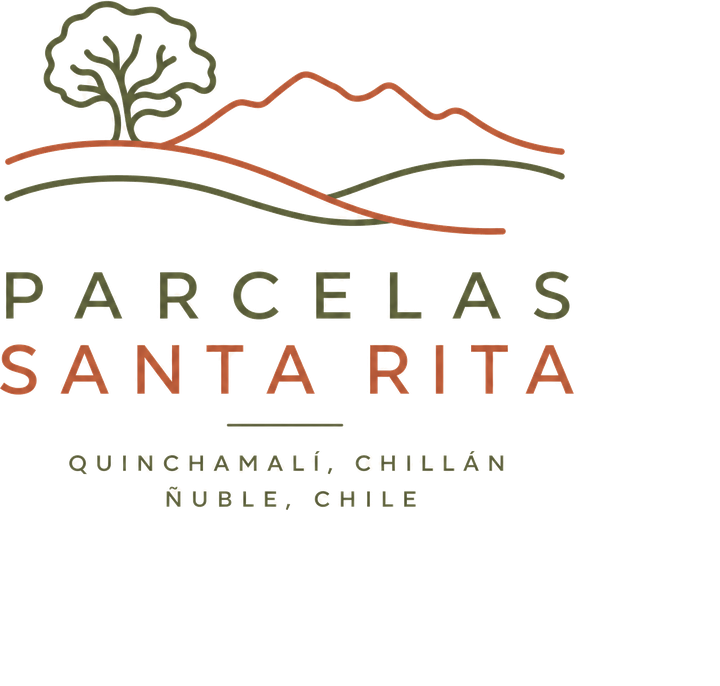
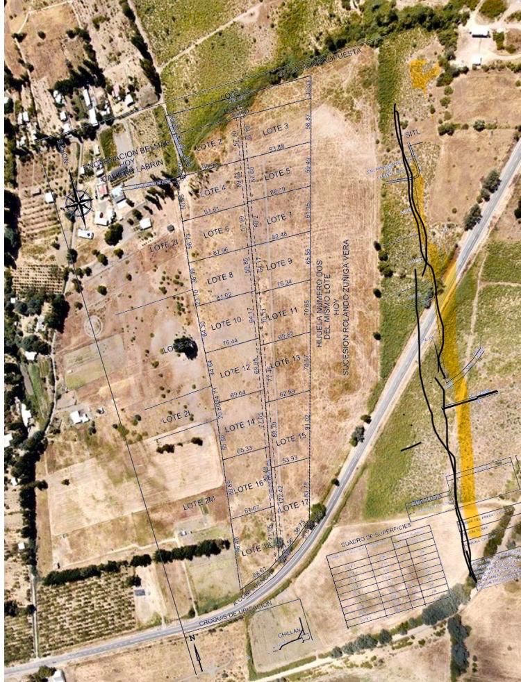

Disponible
Lote 3
- Superficie
- 5.200 m²
- Precio
- UF 950
- Frente
- Camino público

Terrenos desde 5.000 m² con acceso a camino público, agua de pozo y vista a la cordillera. A 20 min de Chillán.
Vista despejada a la cordillera de los Andes desde casi todos los lotes altos
Derechos de agua de pozo profundo certificados, con estudio de napa incluido
Acceso directo por camino público, sin servidumbre de paso de terceros
Título de dominio saneado e inscrito, deslindes topografiados y amojonados
Quinchamalí, en la Región de Ñuble, ha sido durante generaciones tierra de trigo, viñas y greda — hoy también un lugar donde familias de Chillán y Concepción compran su primer terreno de descanso. El loteo se ubica a 20 minutos de Chillán y 12 minutos de la Ruta 5, con vista abierta al valle y la cordillera.
Los 12 lotes disponibles van desde 5.000 m² hasta 20.000 m², todos con acceso directo por camino público, factibilidad de agua de pozo verificada y título de dominio saneado — sin comunidades ni copropiedad. Ideal para segunda vivienda, proyecto agrícola a pequeña escala o inversión de largo plazo.
Precios en UF, actualizados al 17 de agosto de 2026. Financiamiento directo hasta 24 meses.
8 lotes adicionales disponibles — foto satelital y deslindes exactos por WhatsApp.
Hijuela Número Dos — 17 lotes en total. Estado actualizado al 18 de agosto de 2026.
Esquema referencial — las proporciones no representan superficies reales.

Lotes 6, 13, 15, 17 y 18 ya se encuentran vendidos. El resto continúa disponible para reserva.
13 años vendiendo parcelas en Ñuble. Sin intermediarios, sin sorpresas en el CBR.
Dominio vigente, sin embargos ni prohibiciones. Certificado de hipotecas y gravámenes disponible antes de firmar.
Cada lote viene con plano topográfico inscrito en el Conservador de Bienes Raíces de Chillán.
Tratas directo con la familia propietaria del loteo — no hay corredor intermedio ni comisión oculta en el precio.
Firma en Notaría de Chillán, con abogado de tu confianza si lo prefieres. Escritura lista en 30 días.

"Compramos el Lote 5 hace dos años. Todo el trámite fue directo con Horacio, sin vueltas — la escritura estuvo lista en tres semanas."
— Familia Vergara, Chillán
Quinchamalí, Comuna de Chillán, Región de Ñuble — 20 min del centro de Chillán, 12 min de la Ruta 5.
Te enviamos ubicación exacta, planos de cada lote, precios actualizados y disponibilidad — por correo o WhatsApp, como prefieras.